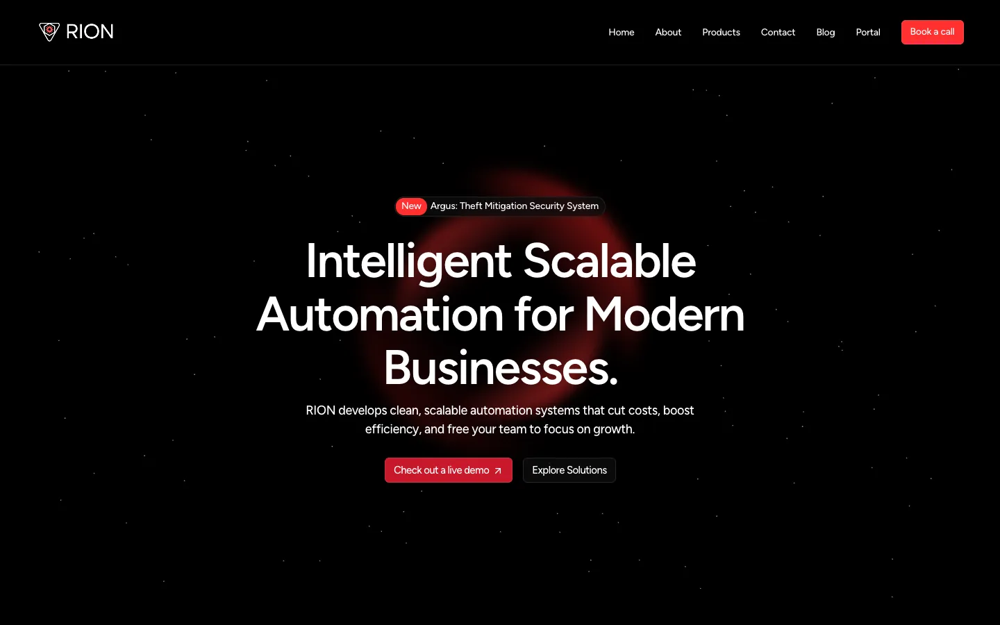
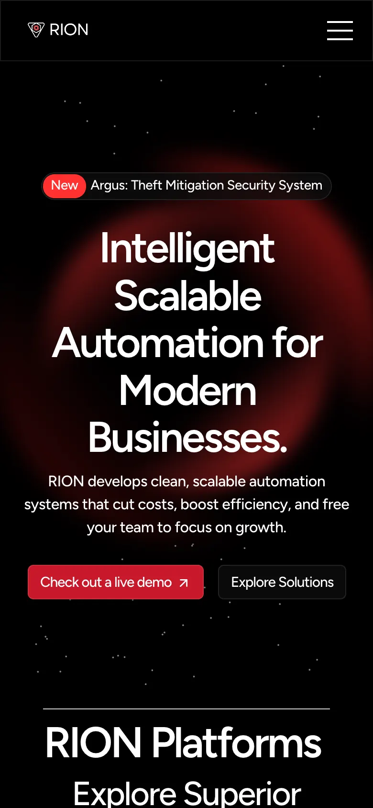

Company site rebuild
RION Solutions website
A rebuild of the RION Solutions website in Next.js.
- rionsolution.com
- Private repo

The numbers
- 14 of 18commits are mine
- 3tools in the rebuild: Next.js, Tailwind, Framer Motion
The problem
A company site that needed to be code in a repository, not a page in a design tool.
RION Solutions builds automation software. Its site was made in Framer. That is quick to start, but the team could not review changes like code, reuse components with the rest of the product work, or control how it was built and hosted.
Approach
Rebuild the same look and content in Next.js, so the site lives in git next to everything else the company ships.
- Next.js for pages and routing.
- Tailwind for styling, so the design tokens live in one place.
- Framer Motion to keep the motion the Framer site had.
Before and after
| Framer site | Next.js rebuild | |
|---|---|---|
| Where it lives | In a design tool | In a git repository |
| Styling | Set in the tool | Tailwind classes |
| Motion | Built in the tool | Framer Motion in code |
| Review | Visual only | Pull requests, like any code |
What visitors see today: a dark starfield hero with a red glow, a headline about scalable automation, a Book a call button, then product sections including a custom AI development offer.
Results
| What | Number |
|---|---|
| Commits that are mine | 14 of 18 |
| Rebuild date | Apr 2026 |
| Live today | The Framer version |
| Rebuild | Next.js, Tailwind, Framer Motion |
I do not claim a speed number here because I did not measure one. The live site still runs the Framer version, and the rebuild is the version that lives in the repository.
What I owned
- Rebuilt the Framer site in Next.js with Tailwind and Framer Motion.
- Matched the live site's look: starfield, red glow and the product sections.
What I learned
- A rebuild is easy to start and hard to finish. Content, motion and small details decide whether it feels like the original.
- Writing down what is live and what is not keeps a portfolio honest.
Screens


